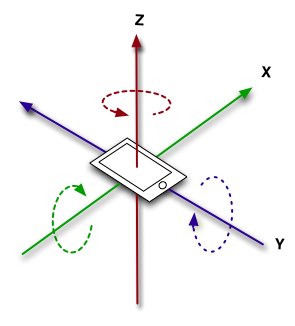
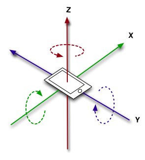

Pellucas
I’m making some tests with the gyroscope(virtual joystick) on Android and I’m using the code from the Touch.as file, but the Z-Axis seems not to be detected.
Is this a known issue or I’m doing something wrong?


I’m making some tests with the gyroscope(virtual joystick) on Android and I’m using the code from the Touch.as file, but the Z-Axis seems not to be detected.
Is this a known issue or I’m doing something wrong?


Did you modify Touch.as ? Just taking a peek at it, looks to me like it only detects movement on two axes. If you want to detect on a third axes, you’ll have to modify the code to do so, or otherwise interact with the JoystickState directly, something like:
if (input.numJoysticks > 0) // numJoysticks = 1 on iOS & Android
{
JoystickState@ joystick = input.joysticksByIndex[0];
if (joystick.numAxes >= 3)
{
zAxis = joystick.axisPosition[2];
}
}
[quote=“hd_”]Did you modify Touch.as ? Just taking a peek at it, looks to me like it only detects movement on two axes. If you want to detect on a third axes, you’ll have to modify the code to do so, or otherwise interact with the JoystickState directly, something like:
if (input.numJoysticks > 0) // numJoysticks = 1 on iOS & Android
{
JoystickState@ joystick = input.joysticksByIndex[0];
if (joystick.numAxes >= 3)
{
zAxis = joystick.axisPosition[2];
}
}[/quote]
Thanks @hd_
Yes, I did it. I created a class for the gyroscope with a “update handler”. The Z-Axis return incorrect data, but X and Y work well.
UpdateMovement function:
void UpdateMovement() {
JoystickState@ joy = input.joysticksByIndex[0];
if(joy.numAxes >= 2) {
float x = joy.axisPosition[1]; // ptich
float y = joy.axisPosition[0]; // roll
float z = joy.axisPosition[2]; // yaw
if(x < -threshold || x > threshold)
_pitch = x;
if(y < -threshold || y > threshold)
_roll = y;
if(z < -threshold || z > threshold)
_yaw = z;
// NOTE: Debug(Android)
gyroInfo.text =
"Pitch(x)(1): " + x +"\n"
"Roll(y)(0): " + y +"\n"
"Yaw(z)(2): " + z;
}
}UpdateMovement() is called from an Update() function.
_pitch, _roll and _yaw are private instance variables that are accessed from read only properties.